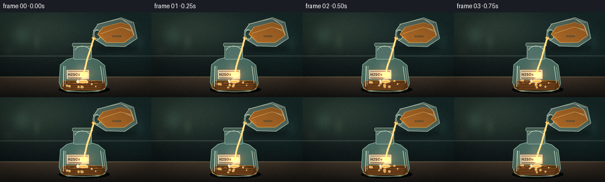
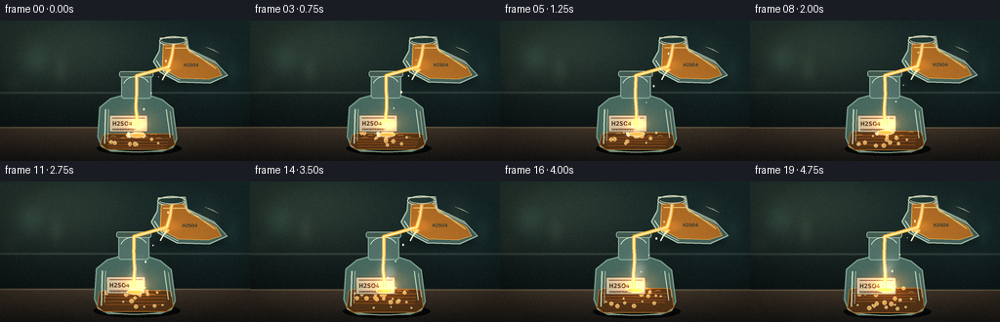
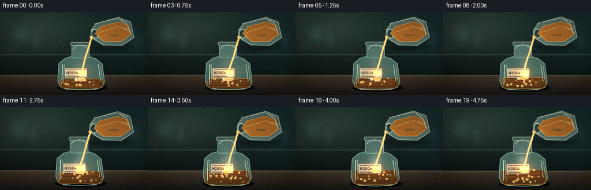
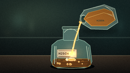
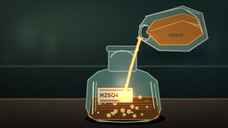
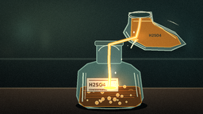
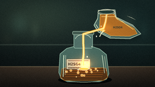
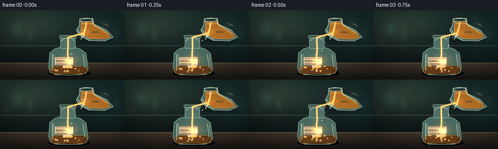

CODING AGENTS AS PIXEL WORLD MODELS
traex/DeepSeek-V4.1-Flash · material_0039
点击播放 · 原生 RGB 像素
逐轮保存的候选
回放视频、检查图与代码变化。
每份候选均可单独播放。实际图片检查记录在下方工具轨迹中。
候选 01播放与检查图
点击播放 · 原生 RGB 像素


展开代码变化
--- 上一保存版本
+++ 本次保存版本
@@ -0,0 +1,401 @@
+from __future__ import annotations
+
+import math
+from pathlib import Path
+
+import numpy as np
+from PIL import Image, ImageDraw, ImageFilter, ImageFont
+
+import artifact_io
+
+
+W, H, N, FPS = 256, 144, 20, 4.0
+S = 4
+RW, RH = W * S, H * S
+CASE = Path(__file__).resolve().parent
+
+
+def s(value: float) -> int:
+ return int(round(value * S))
+
+
+def box(values):
+ return tuple(s(value) for value in values)
+
+
+def smoothstep(a: float, b: float, x: float) -> float:
+ x = min(1.0, max(0.0, (x - a) / (b - a)))
+ return x * x * (3.0 - 2.0 * x)
+
+
+def mix(a, b, amount):
+ a = np.asarray(a, dtype=np.float32)
+ b = np.asarray(b, dtype=np.float32)
+ return np.clip(a * (1.0 - amount) + b * amount, 0, 255)
+
+
+def add_radial(
+ image: np.ndarray,
+ cx: float,
+ cy: float,
+ rx: float,
+ ry: float,
+ color,
+ strength: float,
+ power: float = 2.0,
+) -> None:
+ h, w = image.shape[:2]
+ pad = 3.0
+ x0 = max(0, int(cx - rx * pad))
+ x1 = min(w, int(cx + rx * pad + 1))
+ y0 = max(0, int(cy - ry * pad))
+ y1 = min(h, int(cy + ry * pad + 1))
+ if x0 >= x1 or y0 >= y1:
+ return
+ yy, xx = np.mgrid[y0:y1, x0:x1].astype(np.float32)
+ d = ((xx - cx) / max(rx, 1e-3)) ** 2 + ((yy - cy) / max(ry, 1e-3)) ** 2
+ alpha = np.exp(-(d**power) * 1.8) * strength
+ image[y0:y1, x0:x1] += np.asarray(color, dtype=np.float32)[None, None, :] * alpha[..., None]
+
+
+def background() -> np.ndarray:
+ yy, xx = np.mgrid[0:RH, 0:RW].astype(np.float32)
+ x = xx / RW
+ y = yy / RH
+
+ top = np.array([25, 43, 43], dtype=np.float32)
+ bottom = np.array([13, 20, 21], dtype=np.float32)
+ t = np.clip(y / 0.78, 0, 1) ** 1.15
+ base = top[None, None, :] * (1 - t[..., None]) + bottom[None, None, :] * t[..., None]
+
+ key = np.exp(-(((x - 0.22) / 0.34) ** 2 + ((y - 0.18) / 0.32) ** 2))
+ base += key[..., None] * np.array([25, 27, 17], dtype=np.float32)
+ side = np.exp(-(((x - 0.93) / 0.25) ** 2 + ((y - 0.35) / 0.45) ** 2))
+ base += side[..., None] * np.array([4, 11, 10], dtype=np.float32)
+
+ # A softly out-of-focus laboratory shelf and distant glassware.
+ shelf_y = s(74)
+ shelf_alpha = np.exp(-((yy - shelf_y) / s(1.0)) ** 2)
+ base += shelf_alpha[..., None] * np.array([29, 32, 27], dtype=np.float32)
+ for cx, cy, rx, ry, col, amount in [
+ (36, 40, 18, 20, (44, 73, 66), 0.24),
+ (62, 50, 9, 17, (71, 83, 62), 0.15),
+ (213, 37, 15, 21, (76, 65, 45), 0.16),
+ (238, 50, 8, 15, (42, 69, 62), 0.13),
+ (15, 65, 13, 11, (82, 66, 42), 0.09),
+ ]:
+ add_radial(base, s(cx), s(cy), s(rx), s(ry), col, amount, 1.0)
+
+ # Bench top with a restrained warm reflection.
+ bench = yy > s(109)
+ bt = np.clip((yy - s(109)) / s(35), 0, 1)
+ bench_color = (
+ np.array([66, 54, 42], dtype=np.float32)[None, None, :] * (1 - bt[..., None])
+ + np.array([24, 23, 21], dtype=np.float32)[None, None, :] * bt[..., None]
+ )
+ base = np.where(bench[..., None], bench_color, base)
+ rim = np.exp(-((yy - s(109.5)) / s(0.85)) ** 2)
+ base += rim[..., None] * np.array([49, 45, 32], dtype=np.float32)
+
+ # Subtle table grain and wall texture, fixed for temporal coherence.
+ rng = np.random.default_rng(34)
+ grain = rng.normal(0, 2.25, (RH, RW, 1)).astype(np.float32)
+ grain *= np.where(bench[..., None], 1.0, 0.36)
+ base += grain
+ return np.clip(base, 0, 255)
+
+
+def rounded_polygon(draw: ImageDraw.ImageDraw, points, fill, outline=None, width=1):
+ pts = [box(p) for p in points]
+ draw.polygon(pts, fill=fill)
+ if outline:
+ draw.line(pts + [pts[0]], fill=outline, width=width, joint="curve")
+
+
+def render_bottle(img: Image.Image, u: float, reaction: float) -> None:
+ d = ImageDraw.Draw(img, "RGBA")
+
+ # Bottle shadow and contact darkening.
+ d.ellipse(box((99, 124, 186, 138)), fill=(5, 8, 8, 150))
+ d.ellipse(box((105, 127, 177, 136)), fill=(12, 13, 11, 180))
+ d.ellipse(box((110, 128, 171, 134)), fill=(75, 53, 28, 24))
+
+ # Back glass body: a wide reagent bottle with a short neck.
+ body = [(102, 89), (113, 80), (124, 77), (154, 77), (166, 81), (177, 90),
+ (181, 121), (177, 130), (166, 134), (114, 134), (104, 129), (100, 119)]
+ rounded_polygon(d, body, (72, 105, 95, 70), (127, 164, 146, 105), s(1.25))
+ d.rounded_rectangle(box((124, 55, 155, 80)), radius=s(3), fill=(81, 112, 104, 67),
+ outline=(139, 177, 158, 112), width=s(1.1))
+ d.rounded_rectangle(box((122, 52, 157, 58)), radius=s(2), fill=(67, 90, 80, 130),
+ outline=(165, 196, 174, 130), width=s(0.8))
+
+ # Inner shadow and glass thickness.
+ d.ellipse(box((105, 119, 177, 134)), fill=(8, 21, 20, 62))
+ d.arc(box((102, 118, 179, 135)), 8, 171, fill=(173, 194, 162, 82), width=s(0.8))
+
+ # Amber acid inside the bottle; its surface rises through the clip.
+ level = 117.5 - 8.5 * smoothstep(0.02, 1.0, u)
+ liquid = [(105, level), (110, level - 1.5), (173, level - 1.5), (177, level),
+ (179, 127), (172, 132), (109, 132), (103, 127)]
+ rounded_polygon(d, liquid, (91, 55, 24, 185), (196, 125, 42, 72), s(0.75))
+
+ # Liquid depth bands and moving caustics.
+ for k in range(4):
+ y = level + 3.0 + k * 3.0 + 0.45 * math.sin(u * 8 + k)
+ d.line([box((108 + k, y)), box((173 - k, y + 0.5))],
+ fill=(191, 102, 33, 20 + 3 * k), width=s(0.65))
+ for k in range(7):
+ phase = u * 10 + k * 1.7
+ cx = 116 + 8 * k + 2.0 * math.sin(phase)
+ cy = level + 2.0 + 2.2 * math.sin(k * 2.3 + u * 6)
+ d.arc(box((cx - 3, cy - 1.5, cx + 3, cy + 1.5)), 200, 335,
+ fill=(238, 165, 67, 78), width=s(0.55))
+
+ # Reaction foam and bubbles.
+ bubble_count = 8 + int(13 * reaction)
+ for k in range(bubble_count):
+ rng = np.random.default_rng(100 + k)
+ radius = 0.65 + 1.55 * rng.random()
+ speed = 2.0 + 4.0 * rng.random()
+ phase = (u * speed + rng.random()) % 1.0
+ bx = 111 + 59 * rng.random() + 1.2 * math.sin(u * 8 + k)
+ by = level + (130 - level) * (1.0 - phase) - 2.0
+ alpha = int(65 + 105 * reaction)
+ d.ellipse(box((bx - radius, by - radius, bx + radius, by + radius)),
+ fill=(237, 174, 79, alpha), outline=(255, 225, 155, alpha), width=s(0.45))
+ d.arc(box((bx - radius * 0.55, by - radius * 0.55,
+ bx + radius * 0.55, by + radius * 0.55)),
+ 195, 320, fill=(255, 247, 206, min(255, alpha + 45)), width=s(0.35))
+
+ # Churning foam directly under the impact point.
+ foam_w = 17 + 7 * reaction
+ for k in range(17):
+ rng = np.random.default_rng(500 + k)
+ angle = rng.random() * math.tau
+ bx = 139.5 + math.cos(angle) * foam_w * rng.random() * 0.55
+ by = level - 0.8 + math.sin(angle) * 3.0 * rng.random()
+ br = 0.8 + 1.9 * rng.random()
+ col = (255, 218, 143, 88) if k % 3 else (255, 248, 218, 105)
+ d.ellipse(box((bx - br, by - br, bx + br, by + br)), fill=col)
+
+ # Fine highlights on the front of the bottle.
+ d.line([box((108, 91)), box((107, 126))], fill=(212, 233, 204, 54), width=s(1.3))
+ d.line([box((111, 91)), box((110, 123))], fill=(244, 248, 218, 92), width=s(0.55))
+ d.line([box((170, 91)), box((174, 120))], fill=(199, 220, 192, 44), width=s(1.0))
+ d.line([box((174, 93)), box((177, 117))], fill=(245, 238, 202, 55), width=s(0.45))
+ d.arc(box((126, 57, 153, 77)), 195, 338, fill=(226, 239, 211, 74), width=s(0.7))
+
+ # A small, legible reagent label.
+ label = box((112, 97, 151, 114))
+ d.rounded_rectangle(label, radius=s(1.0), fill=(205, 196, 164, 220),
+ outline=(73, 66, 51, 130), width=s(0.5))
+ d.line([box((115, 100)), box((148, 100))], fill=(99, 61, 43, 155), width=s(0.75))
+ d.line([box((115, 111)), box((139, 111))], fill=(99, 61, 43, 105), width=s(0.45))
+ font_path = "/usr/share/fonts/truetype/dejavu/DejaVuSansCondensed-Bold.ttf"
+ font = ImageFont.truetype(font_path, s(6.0))
+ d.text(box((115, 102))[:2], "H2SO4", font=font, fill=(60, 48, 36, 225))
+ small = ImageFont.truetype(font_path, s(2.7))
+ d.text(box((115, 110))[:2], "CONCENTRATED", font=small, fill=(85, 61, 43, 180))
+
+ # Bright meniscus where the stream meets the reaction.
+ d.ellipse(box((132, level - 2.3, 149, level + 2.4)),
+ fill=(255, 190, 83, int(95 + 100 * reaction)),
+ outline=(255, 247, 203, int(125 + 90 * reaction)), width=s(0.65))
+
+
+def render_pouring_vessel(img: Image.Image, u: float) -> None:
+ d = ImageDraw.Draw(img, "RGBA")
+ bob = 0.35 * math.sin(u * math.tau * 0.7)
+
+ # A tilted glass acid vessel at upper right. The open lip faces the bottle.
+ vessel = [(158, 31 + bob), (166, 20 + bob), (205, 9 + bob), (226, 17 + bob),
+ (232, 44 + bob), (211, 58 + bob), (179, 57 + bob), (161, 46 + bob)]
+ rounded_polygon(d, vessel, (86, 111, 101, 61), (161, 190, 172, 124), s(1.25))
+ d.ellipse(box((157, 29 + bob, 170, 47 + bob)), fill=(34, 61, 57, 105),
+ outline=(184, 207, 185, 140), width=s(1.0))
+ d.arc(box((159, 30 + bob, 169, 45 + bob)), 70, 285,
+ fill=(236, 238, 205, 90), width=s(0.65))
+
+ # Amber acid held diagonally inside the tilted vessel.
+ acid = [(165, 37 + bob), (174, 25 + bob), (205, 17 + bob), (222, 23 + bob),
+ (227, 39 + bob), (210, 51 + bob), (180, 51 + bob)]
+ rounded_polygon(d, acid, (171, 104, 39, 145), (244, 173, 70, 58), s(0.7))
+ d.line([box((170, 36 + bob)), box((204, 25 + bob)), box((224, 30 + bob))],
+ fill=(255, 205, 110, 105), width=s(0.8))
+
+ # Vessel rim, shoulder reflection, and etched volume marks.
+ d.line([box((164, 20 + bob)), box((203, 11 + bob)), box((223, 18 + bob))],
+ fill=(231, 236, 207, 105), width=s(0.8))
+ d.line([box((207, 12 + bob)), box((220, 21 + bob)), box((226, 38 + bob))],
+ fill=(245, 239, 203, 95), width=s(0.65))
+ for k in range(3):
+ d.line([box((211 + k * 3, 27 + bob + k)), box((220 + k * 2, 31 + bob + k))],
+ fill=(225, 229, 196, 62), width=s(0.45))
+
+ font = ImageFont.truetype(
+ "/usr/share/fonts/truetype/dejavu/DejaVuSansCondensed-Bold.ttf", s(4.4)
+ )
+ d.text(box((190, 38 + bob))[:2], "H2SO4", font=font, fill=(70, 70, 53, 155))
+
+
+def render_stream(img: Image.Image, u: float, reaction: float) -> None:
+ d = ImageDraw.Draw(img, "RGBA")
+ start = (158.5, 43.5)
+ end = (139.6, 107.4)
+
+ # Liquid neck leaving the vessel lip, then a nearly vertical falling stream.
+ neck = [(157.0, 41.0), (162.0, 44.5), (158.5, 47.0), (155.0, 43.5)]
+ d.polygon([box(p) for p in neck], fill=(245, 190, 89, 205))
+
+ for k, (width, alpha, color) in enumerate([
+ (2.9, 25, (255, 195, 79)),
+ (1.45, 112, (255, 215, 126)),
+ (0.55, 225, (255, 251, 222)),
+ ]):
+ points = []
+ for j in range(18):
+ t = j / 17.0
+ x = start[0] + (end[0] - start[0]) * t + 0.8 * math.sin(t * 9 - u * 18) * t
+ y = start[1] + (end[1] - start[1]) * t
+ points.append((x, y))
+ d.line([box(p) for p in points], fill=(*color, alpha), width=s(width), joint="curve")
+
+ # Highlight beads traveling down the stream.
+ for k in range(5):
+ t = (u * 5.0 + k / 5.0) % 1.0
+ x = start[0] + (end[0] - start[0]) * t
+ y = start[1] + (end[1] - start[1]) * t
+ r = 0.55 + 0.25 * math.sin(k * 2.1)
+ d.ellipse(box((x - r, y - r * 1.5, x + r, y + r * 1.5)),
+ fill=(255, 254, 226, 185))
+
+ # Impact splash: a low crown and a few fine droplets.
+ splash_y = 107.2
+ for k in range(9):
+ phase = (u * 2.7 + k * 0.137) % 1.0
+ direction = -1 if k % 2 == 0 else 1
+ dx = direction * (2.0 + 11.0 * phase) * (0.65 + 0.35 * reaction)
+ dy = -4.5 * math.sin(phase * math.pi) + 1.3 * phase
+ alpha = int(150 * (1.0 - phase))
+ d.ellipse(box((139.5 + dx - 0.65, splash_y + dy - 0.65,
+ 139.5 + dx + 0.65, splash_y + dy + 0.65)),
+ fill=(255, 216, 124, alpha))
+
+
+def add_smoke(frame: np.ndarray, u: float, reaction: float) -> np.ndarray:
+ h, w = frame.shape[:2]
+ smoke_rgb = np.zeros((h, w, 3), dtype=np.float32)
+ smoke_a = np.zeros((h, w), dtype=np.float32)
+
+ plume_strength = 0.24 + 0.76 * smoothstep(0.0, 0.78, u)
+ blobs = 31
+ for k in range(blobs):
+ rng = np.random.default_rng(810 + k)
+ birth = 0.03 + 0.92 * rng.random()
+ age = (u - birth) % 1.0
+ if age > 0.82:
+ continue
+ rise = age * (26 + 17 * rng.random())
+ sway = (2.2 + 4.2 * rng.random()) * math.sin(age * (2.2 + rng.random()) + k)
+ cx = 138 + (rng.random() - 0.5) * 13 + sway + age * (5.0 * (rng.random() - 0.48))
+ cy = 102 - rise - 3.0 * rng.random()
+ rx = 4.5 + 9.0 * age + 2.5 * rng.random()
+ ry = 4.0 + 10.0 * age + 2.0 * rng.random()
+ opacity = plume_strength * (0.045 + 0.06 * rng.random()) * (1.0 - age / 0.82)
+ pad = 2.8
+ x0, x1 = max(0, int(cx - rx * pad)), min(w, int(cx + rx * pad + 1))
+ y0, y1 = max(0, int(cy - ry * pad)), min(h, int(cy + ry * pad + 1))
+ if x0 >= x1 or y0 >= y1:
+ continue
+ yy, xx = np.mgrid[y0:y1, x0:x1].astype(np.float32)
+ d = ((xx - cx) / rx) ** 2 + ((yy - cy) / ry) ** 2
+ a = np.exp(-d * 1.85) * opacity
+ # Warm core near the bottle mouth, cool white as vapor rises.
+ warmth = max(0.0, 1.0 - (cy - 60) / 47.0)
+ color = np.array([230 + 18 * warmth, 235 + 5 * warmth, 219 - 18 * warmth])
+ smoke_rgb[y0:y1, x0:x1] += color[None, None, :] * a[..., None]
+ smoke_a[y0:y1, x0:x1] += a
+
+ smoke_a = np.clip(smoke_a, 0, 0.72)
+ denom = np.maximum(smoke_a, 1e-4)
+ smoke_rgb /= denom[..., None]
+ return frame.astype(np.float32) * (1 - smoke_a[..., None]) + smoke_rgb * smoke_a[..., None]
+
+
+def add_glow(frame: np.ndarray, u: float, reaction: float) -> np.ndarray:
+ out = frame.astype(np.float32)
+ pulse = 0.86 + 0.14 * math.sin(u * 21.0) + 0.05 * math.sin(u * 37.0 + 1.7)
+ add_radial(out, 140, 105, 28, 17, (255, 108, 22), (0.13 + 0.10 * reaction) * pulse, 1.35)
+ add_radial(out, 140, 106, 12, 7, (255, 202, 97), (0.20 + 0.18 * reaction) * pulse, 1.5)
+ add_radial(out, 166, 42, 12, 7, (255, 172, 60), 0.065, 1.5)
+ return np.clip(out, 0, 255)
+
+
+def post_process(frame: np.ndarray, u: float) -> np.ndarray:
+ h, w = frame.shape[:2]
+ yy, xx = np.mgrid[0:h, 0:w].astype(np.float32)
+ nx = (xx - w / 2) / (w / 2)
+ ny = (yy - h / 2) / (h / 2)
+ vignette = np.clip(1.0 - 0.19 * (nx**2 + ny**2) ** 1.2, 0.72, 1.0)
+ out = frame.astype(np.float32) * vignette[..., None]
+
+ # Gentle highlight bloom, concentrated around the reaction.
+ bright = np.maximum(out - 188.0, 0.0)
+ blur = np.asarray(
+ Image.fromarray(np.clip(bright, 0, 255).astype(np.uint8)).filter(
+ ImageFilter.GaussianBlur(2.0)
+ ),
+ dtype=np.float32,
+ )
+ out += blur * 0.42
+
+ # Fine film grain keeps the otherwise synthetic gradients alive at 4 fps.
+ rng = np.random.default_rng(9000 + int(round(u * 1000)))
+ grain = rng.normal(0.0, 1.65, (h, w, 1)).astype(np.float32)
+ out += grain
+ return np.clip(out, 0, 255).astype(np.uint8)
+
+
+def render_frame(index: int) -> np.ndarray:
+ u = index / (N - 1)
+ reaction = 0.22 + 0.78 * smoothstep(0.0, 0.95, u)
+ base = background()
+ img = Image.fromarray(np.clip(base, 0, 255).astype(np.uint8), "RGB").convert("RGBA")
+
+ # Soft shadow under the tilted vessel.
+ shade = Image.new("RGBA", (RW, RH), (0, 0, 0, 0))
+ sd = ImageDraw.Draw(shade, "RGBA")
+ sd.ellipse(box((160, 55, 232, 67)), fill=(0, 0, 0, 70))
+ shade = shade.filter(ImageFilter.GaussianBlur(s(3.0)))
+ img = Image.alpha_composite(img, shade)
+
+ render_pouring_vessel(img, u)
+ render_bottle(img, u, reaction)
+ render_stream(img, u, reaction)
+
+ # Camera drifts in slightly over the clip, keeping all action in frame.
+ zoom = 1.0 + 0.035 * smoothstep(0.0, 1.0, u)
+ crop_w, crop_h = int(RW / zoom), int(RH / zoom)
+ cx = RW * (0.51 + 0.004 * math.sin(u * math.pi))
+ cy = RH * (0.505 - 0.006 * u)
+ left = int(np.clip(cx - crop_w / 2, 0, RW - crop_w))
+ top = int(np.clip(cy - crop_h / 2, 0, RH - crop_h))
+ scene = img.convert("RGB").crop((left, top, left + crop_w, top + crop_h))
+ scene = scene.resize((W, H), Image.Resampling.LANCZOS)
+ frame = np.asarray(scene, dtype=np.float32)
+
+ frame = add_glow(frame, u, reaction)
+ frame = add_smoke(frame, u, reaction)
+ frame = post_process(frame, u)
+ return frame.astype(np.uint8)
+
+
+def main() -> None:
+ frames = np.stack([render_frame(i) for i in range(N)], axis=0)
+ assert frames.shape == (N, H, W, 3) and frames.dtype == np.uint8
+ artifact_io.save(frames, CASE)
+ print(f"wrote {N} frames at {W}x{H}, {FPS:g} fps")
+
+
+if __name__ == "__main__":
+ main()
候选 02播放与检查图
点击播放 · 原生 RGB 像素

展开代码变化
--- 上一保存版本
+++ 本次保存版本
@@ -207,27 +207,30 @@
d = ImageDraw.Draw(img, "RGBA")
bob = 0.35 * math.sin(u * math.tau * 0.7)
- # A tilted glass acid vessel at upper right. The open lip faces the bottle.
- vessel = [(158, 31 + bob), (166, 20 + bob), (205, 9 + bob), (226, 17 + bob),
- (232, 44 + bob), (211, 58 + bob), (179, 57 + bob), (161, 46 + bob)]
- rounded_polygon(d, vessel, (86, 111, 101, 61), (161, 190, 172, 124), s(1.25))
- d.ellipse(box((157, 29 + bob, 170, 47 + bob)), fill=(34, 61, 57, 105),
- outline=(184, 207, 185, 140), width=s(1.0))
- d.arc(box((159, 30 + bob, 169, 45 + bob)), 70, 285,
- fill=(236, 238, 205, 90), width=s(0.65))
-
- # Amber acid held diagonally inside the tilted vessel.
- acid = [(165, 37 + bob), (174, 25 + bob), (205, 17 + bob), (222, 23 + bob),
- (227, 39 + bob), (210, 51 + bob), (180, 51 + bob)]
- rounded_polygon(d, acid, (171, 104, 39, 145), (244, 173, 70, 58), s(0.7))
- d.line([box((170, 36 + bob)), box((204, 25 + bob)), box((224, 30 + bob))],
- fill=(255, 205, 110, 105), width=s(0.8))
+ # A tilted Erlenmeyer flask, drawn with a narrow neck and a broad base.
+ vessel = [(163, 31 + bob), (164, 18 + bob), (191, 17 + bob), (193, 29 + bob),
+ (220, 42 + bob), (233, 56 + bob), (215, 64 + bob), (183, 63 + bob),
+ (164, 53 + bob), (157, 42 + bob)]
+ rounded_polygon(d, vessel, (75, 104, 96, 79), (176, 203, 180, 147), s(1.35))
+ d.ellipse(box((163, 16 + bob, 192, 26 + bob)), fill=(38, 65, 60, 125),
+ outline=(213, 222, 196, 172), width=s(1.15))
+ d.arc(box((165, 17 + bob, 190, 24 + bob)), 12, 168,
+ fill=(249, 246, 214, 150), width=s(0.8))
+
+ # Amber acid held diagonally inside the tilted flask.
+ acid = [(167, 25 + bob), (189, 24 + bob), (195, 33 + bob), (222, 47 + bob),
+ (227, 56 + bob), (214, 60 + bob), (184, 59 + bob), (166, 49 + bob)]
+ rounded_polygon(d, acid, (188, 116, 40, 193), (255, 189, 79, 92), s(0.8))
+ d.line([box((169, 28 + bob)), box((191, 28 + bob)), box((221, 49 + bob))],
+ fill=(255, 214, 117, 150), width=s(0.9))
# Vessel rim, shoulder reflection, and etched volume marks.
- d.line([box((164, 20 + bob)), box((203, 11 + bob)), box((223, 18 + bob))],
- fill=(231, 236, 207, 105), width=s(0.8))
- d.line([box((207, 12 + bob)), box((220, 21 + bob)), box((226, 38 + bob))],
- fill=(245, 239, 203, 95), width=s(0.65))
+ d.line([box((164, 18 + bob)), box((190, 17 + bob))],
+ fill=(246, 242, 209, 174), width=s(0.9))
+ d.line([box((189, 18 + bob)), box((193, 31 + bob)), box((223, 45 + bob))],
+ fill=(245, 239, 203, 108), width=s(0.75))
+ d.line([box((160, 41 + bob)), box((168, 53 + bob)), box((184, 61 + bob))],
+ fill=(227, 239, 210, 102), width=s(0.75))
for k in range(3):
d.line([box((211 + k * 3, 27 + bob + k)), box((220 + k * 2, 31 + bob + k))],
fill=(225, 229, 196, 62), width=s(0.45))
@@ -235,28 +238,36 @@
font = ImageFont.truetype(
"/usr/share/fonts/truetype/dejavu/DejaVuSansCondensed-Bold.ttf", s(4.4)
)
- d.text(box((190, 38 + bob))[:2], "H2SO4", font=font, fill=(70, 70, 53, 155))
+ d.text(box((188, 43 + bob))[:2], "H2SO4", font=font, fill=(62, 63, 49, 174))
def render_stream(img: Image.Image, u: float, reaction: float) -> None:
d = ImageDraw.Draw(img, "RGBA")
- start = (158.5, 43.5)
+ start = (177.4, 24.8)
end = (139.6, 107.4)
- # Liquid neck leaving the vessel lip, then a nearly vertical falling stream.
- neck = [(157.0, 41.0), (162.0, 44.5), (158.5, 47.0), (155.0, 43.5)]
- d.polygon([box(p) for p in neck], fill=(245, 190, 89, 205))
+ # The vessel is tipped enough that the stream spills over its lower lip.
+ spill = [(169.5, 47.0), (175.5, 50.5), (171.8, 54.0), (166.8, 50.5)]
+ d.polygon([box(p) for p in spill], fill=(255, 201, 96, 235))
+ d.line([box((172.5, 51.0)), box((169.0, 55.5)), box((166.0, 61.0))],
+ fill=(255, 245, 203, 205), width=s(1.3), joint="curve")
for k, (width, alpha, color) in enumerate([
- (2.9, 25, (255, 195, 79)),
- (1.45, 112, (255, 215, 126)),
- (0.55, 225, (255, 251, 222)),
+ (3.6, 45, (255, 187, 67)),
+ (1.85, 158, (255, 218, 124)),
+ (0.65, 244, (255, 252, 225)),
]):
points = []
for j in range(18):
t = j / 17.0
- x = start[0] + (end[0] - start[0]) * t + 0.8 * math.sin(t * 9 - u * 18) * t
- y = start[1] + (end[1] - start[1]) * t
+ # A curved meniscus transitions into the thin vertical stream.
+ if t < 0.16:
+ x = start[0] - 8.0 * (t / 0.16) ** 1.6
+ y = start[1] + 31.0 * (t / 0.16)
+ else:
+ q = (t - 0.16) / 0.84
+ x = end[0] + 0.9 * math.sin(q * 8 - u * 17) * q
+ y = 55.8 + (end[1] - 55.8) * q
points.append((x, y))
d.line([box(p) for p in points], fill=(*color, alpha), width=s(width), joint="curve")
@@ -287,21 +298,21 @@
smoke_rgb = np.zeros((h, w, 3), dtype=np.float32)
smoke_a = np.zeros((h, w), dtype=np.float32)
- plume_strength = 0.24 + 0.76 * smoothstep(0.0, 0.78, u)
- blobs = 31
+ plume_strength = 0.18 + 0.82 * smoothstep(0.0, 0.8, u)
+ blobs = 42
for k in range(blobs):
rng = np.random.default_rng(810 + k)
- birth = 0.03 + 0.92 * rng.random()
+ birth = -0.08 + 0.96 * rng.random()
age = (u - birth) % 1.0
- if age > 0.82:
+ if age > 0.78:
continue
- rise = age * (26 + 17 * rng.random())
- sway = (2.2 + 4.2 * rng.random()) * math.sin(age * (2.2 + rng.random()) + k)
- cx = 138 + (rng.random() - 0.5) * 13 + sway + age * (5.0 * (rng.random() - 0.48))
- cy = 102 - rise - 3.0 * rng.random()
- rx = 4.5 + 9.0 * age + 2.5 * rng.random()
- ry = 4.0 + 10.0 * age + 2.0 * rng.random()
- opacity = plume_strength * (0.045 + 0.06 * rng.random()) * (1.0 - age / 0.82)
+ rise = age * (28 + 18 * rng.random())
+ sway = (1.8 + 3.3 * rng.random()) * math.sin(age * (2.0 + rng.random()) + k)
+ cx = 140 + (rng.random() - 0.5) * 10 + sway + age * (5.0 * (rng.random() - 0.5))
+ cy = 103 - rise - 2.0 * rng.random()
+ rx = 2.8 + 7.5 * age + 1.5 * rng.random()
+ ry = 3.0 + 8.5 * age + 1.4 * rng.random()
+ opacity = plume_strength * (0.042 + 0.062 * rng.random()) * (1.0 - age / 0.78)
pad = 2.8
x0, x1 = max(0, int(cx - rx * pad)), min(w, int(cx + rx * pad + 1))
y0, y1 = max(0, int(cy - ry * pad)), min(h, int(cy + ry * pad + 1))
@@ -309,14 +320,14 @@
continue
yy, xx = np.mgrid[y0:y1, x0:x1].astype(np.float32)
d = ((xx - cx) / rx) ** 2 + ((yy - cy) / ry) ** 2
- a = np.exp(-d * 1.85) * opacity
+ a = np.exp(-d * 1.75) * opacity
# Warm core near the bottle mouth, cool white as vapor rises.
warmth = max(0.0, 1.0 - (cy - 60) / 47.0)
- color = np.array([230 + 18 * warmth, 235 + 5 * warmth, 219 - 18 * warmth])
+ color = np.array([238 + 15 * warmth, 241 + 7 * warmth, 227 - 13 * warmth])
smoke_rgb[y0:y1, x0:x1] += color[None, None, :] * a[..., None]
smoke_a[y0:y1, x0:x1] += a
- smoke_a = np.clip(smoke_a, 0, 0.72)
+ smoke_a = np.clip(smoke_a, 0, 0.64)
denom = np.maximum(smoke_a, 1e-4)
smoke_rgb /= denom[..., None]
return frame.astype(np.float32) * (1 - smoke_a[..., None]) + smoke_rgb * smoke_a[..., None]
@@ -325,9 +336,9 @@
def add_glow(frame: np.ndarray, u: float, reaction: float) -> np.ndarray:
out = frame.astype(np.float32)
pulse = 0.86 + 0.14 * math.sin(u * 21.0) + 0.05 * math.sin(u * 37.0 + 1.7)
- add_radial(out, 140, 105, 28, 17, (255, 108, 22), (0.13 + 0.10 * reaction) * pulse, 1.35)
- add_radial(out, 140, 106, 12, 7, (255, 202, 97), (0.20 + 0.18 * reaction) * pulse, 1.5)
- add_radial(out, 166, 42, 12, 7, (255, 172, 60), 0.065, 1.5)
+ add_radial(out, 140, 105, 28, 17, (255, 102, 18), (0.17 + 0.14 * reaction) * pulse, 1.35)
+ add_radial(out, 140, 106, 12, 7, (255, 206, 105), (0.25 + 0.23 * reaction) * pulse, 1.5)
+ add_radial(out, 176, 45, 11, 7, (255, 166, 50), 0.085, 1.5)
return np.clip(out, 0, 255)
候选 03播放与检查图
点击播放 · 原生 RGB 像素

展开代码变化
--- 上一保存版本
+++ 本次保存版本
@@ -5,6 +5,7 @@
import numpy as np
from PIL import Image, ImageDraw, ImageFilter, ImageFont
+import cv2
import artifact_io
@@ -405,6 +406,17 @@
frames = np.stack([render_frame(i) for i in range(N)], axis=0)
assert frames.shape == (N, H, W, 3) and frames.dtype == np.uint8
artifact_io.save(frames, CASE)
+ writer = cv2.VideoWriter(
+ str(CASE / "output.mp4"),
+ cv2.VideoWriter_fourcc(*"mp4v"),
+ FPS,
+ (W, H),
+ )
+ if not writer.isOpened():
+ raise RuntimeError("could not create output.mp4")
+ for frame in frames:
+ writer.write(cv2.cvtColor(frame, cv2.COLOR_RGB2BGR))
+ writer.release()
print(f"wrote {N} frames at {W}x{H}, {FPS:g} fps")
候选 04播放与检查图
点击播放 · 原生 RGB 像素

展开代码变化
--- 上一保存版本
+++ 本次保存版本
@@ -372,7 +372,7 @@
u = index / (N - 1)
reaction = 0.22 + 0.78 * smoothstep(0.0, 0.95, u)
base = background()
- img = Image.fromarray(np.clip(base, 0, 255).astype(np.uint8), "RGB").convert("RGBA")
+ img = Image.fromarray(np.clip(base, 0, 255).astype(np.uint8)).convert("RGBA")
# Soft shadow under the tilted vessel.
shade = Image.new("RGBA", (RW, RH), (0, 0, 0, 0))
可观测工具轨迹
实际执行的命令与返回图片。
命令 1exit 0
/bin/bash -c "pwd && rg --files -g '"'!*node_modules*'"' | sed -n '1,160p'"
命令 2exit 0
/bin/bash -c "sed -n '1,240p' prompt.txt"
命令 3exit 0
/bin/bash -c "sed -n '1,280p' GENERATION_RULES.md"
命令 4exit 0
/bin/bash -c 'cat task_spec.json'
命令 5exit 0
/bin/bash -c "sed -n '1,260p' artifact_io.py"
命令 6exit 0
/bin/bash -c "sed -n '1,260p' player_template.html"
命令 7exit 0
/bin/bash -c "python - <<'PY' import importlib.util for m in ['numpy','PIL','cv2','imageio','scipy','matplotlib']: print(m, bool(importlib.util.find_spec(m))) PY"
命令 8exit 0
/bin/bash -c 'fc-match DejaVuSans-Bold.ttf | head -1 && fc-match DejaVuSans.ttf | head -1'
命令 9exit 0
/bin/bash -c "fc-match -f '%{file}\\n' DejaVuSans-Bold | head -1 && fc-match -f '%{file}\\n' DejaVuSans | head -1"命令 10exit 0
/bin/bash -c "find /usr/share/fonts -type f | sed -n '1,100p'"
命令 11exit 0
/bin/bash -c 'ls -la'
命令 12exit 0
/bin/bash -c 'python generate.py'
命令 13exit 0
/bin/bash -c 'mkdir -p .tmp/candidate1 && cp -r frames inspection.png transition_check.png pixels.npz index.html .tmp/candidate1/'
命令 14exit 0
/bin/bash -c 'python generate.py'
命令 15exit 0
/bin/bash -c "python - <<'PY'
from pathlib import Path
import numpy as np
from PIL import Image
p=Path('.')
a=np.load('pixels.npz')['pixels']
print('pixels', a.shape, a.dtype, 'range', int(a.min()), int(a.max()))
files=sorted(Path('frames').glob('*.png'))
print('frames', len(files), 'sizes', sorted({Image.open(f).size for f in files}))
imgs=np.stack([np.asarray(Image.open(f), dtype=np.int16) for f in files])
d=np.abs(np.diff(imgs, axis=0)).mean(axis=(1,2,3))
print('mean abs frame delta', round(float(d.mean()),3), 'min/max', round(float(d.min()),3), round(float(d.max()),3))
print('artifacts', {n: Path(n).stat().st_size for n in ['pixels.npz','index.html','inspection.png','transition_check.png']})
PY"命令 16exit 0
/bin/bash -c 'python generate.py'
命令 17exit 127
/bin/bash -c 'ffprobe -v error -select_streams v:0 -show_entries stream=width,height,r_frame_rate,nb_frames,codec_name,pix_fmt -of default=noprint_wrappers=1 output.mp4'
命令 18exit 0
/bin/bash -c "python - <<'PY'
from pathlib import Path
import json, numpy as np
from PIL import Image
spec=json.loads(Path('task_spec.json').read_text())
a=np.load('pixels.npz')['pixels']
print('spec', spec)
print('pixels', a.shape, a.dtype)
print('frame count', len(list(Path('frames').glob('*.png'))))
print('rgb artifacts', [(p.name,p.stat().st_size) for p in [Path('pixels.npz'),Path('index.html'),Path('output.mp4'),Path('inspection.png')]])
PY"命令 19exit 0
/bin/bash -c 'git status --short 2>/dev/null || true'
命令 20exit 0
/bin/bash -c "python - <<'PY'
import cv2
cap=cv2.VideoCapture('output.mp4')
frames=[]
while True:
ok, frame=cap.read()
if not ok: break
frames.append(frame)
cap.release()
print('decoded_frames', len(frames), 'shape', frames[0].shape if frames else None, 'fps', cv2.VideoCapture('output.mp4').get(cv2.CAP_PROP_FPS))
PY"命令 21exit 0
/bin/bash -c "python generate.py && python - <<'PY'
import cv2, numpy as np
from pathlib import Path
from PIL import Image
cap=cv2.VideoCapture('output.mp4')
frames=[]
while True:
ok, frame=cap.read()
if not ok: break
frames.append(frame)
cap.release()
p=np.load('pixels.npz')['pixels']
assert p.shape==(144,256,20) and p.dtype==np.uint32
assert len(frames)==20 and frames[0].shape==(144,256,3)
assert len(list(Path('frames').glob('*.png')))==20
print('contract OK:', p.shape, 'mp4', len(frames), 'frames', cv2.VideoCapture('output.mp4').get(cv2.CAP_PROP_FPS), 'fps')
PY"视觉工具实际返回图片 1

视觉工具实际返回图片 2

视觉工具实际返回图片 3

视觉工具实际返回图片 4

视觉工具实际返回图片 5

视觉工具实际返回图片 6

视觉工具实际返回图片 7

保存候选 4 份；完成命令 21 次；可验证图片返回 7 张。原始 API 响应与完整日志保留在本地。